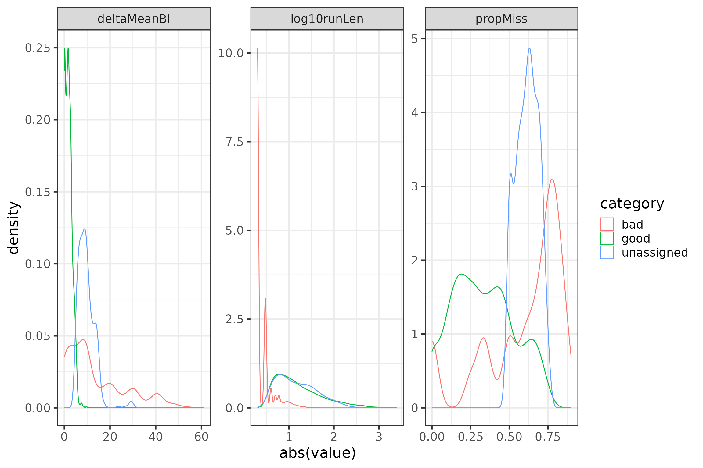
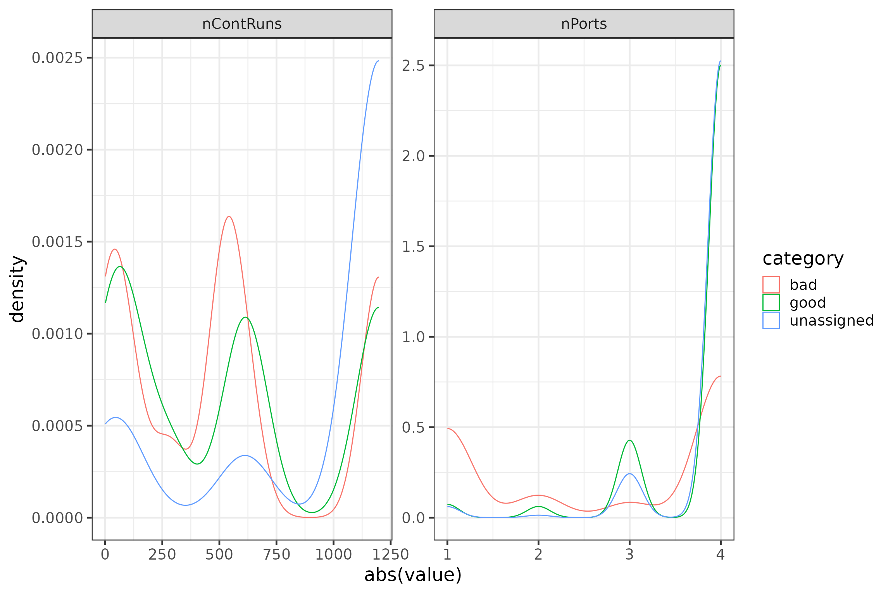
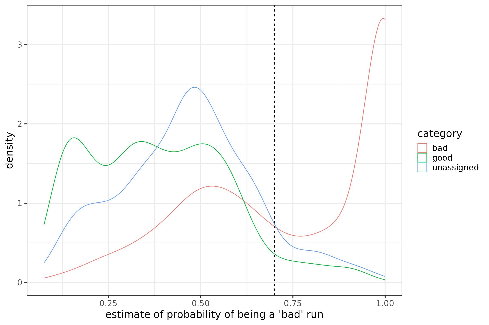

A tool to identify probable false positive detections
Bianca Michalik and Amie MacDonald
Source:vignettes/articles/identifying-false-positives.Rmd
identifying-false-positives.RmdNote: This is a living document that may be updated in the future to incorporate improved knowledge about predictors of false positives and further validation of training datasets.
Introduction
As outlined in Chapter 5, there are several factors that might lead to false detections of your tags in your datasets. One type of these false detections are false positives, which can arise from other sources of electromagnetic pulses in the surroundings of receiving antennas. False positives are liberally allowed for during automated tag filtering at Motus to minimize the risk of missing any real detections. Therefore, we generally recommend you use the tools provided in Chapter 5 to validate your data and to decide individually if a detection is valid in a biological context. However, examining each tag individually for suspect detections can be quite time consuming, especially when you are fortunate enough to have deployed many tags. Furthermore, it is important to record the conditions under which you excluded a detection for transparency and reproducibility. This method facilitates recording the conditions of exclusion, though it is certainly also possible to do so with a little extra work when using visual inspection of diagnostic plots to identify false positives.
The goal of this chapter is to provide a tool to predict the
probability of a detection being a false positive. The concept of our
approach is quite simple: first, we want to use a subset of detection
data from a solid a priori classification of detections either
being ‘good’ or ‘bad’. In the second step, we want to identify potential
diagnostic physical parameters provided in the Motus
alltags table (please see Database Variables for a detailed
description of variables) to characterize the quality of a detection.
Third, we run a logistic regression model with these parameters in order
to predict the probability of each detection being a ‘bad’ detection for
all of your detection data. Finally, you can use the probability
estimates provided from the model to define a threshold for filtering
your data. Of course, it is advisable to re-evaluate the outcome of this
process in a biological context.
While this chapter primarily applies to detection of Lotek nanotags, detections from Cellular Tracking Technologies (CTT) tags are also subject to false detections. Because the properties and the processing of the data are quite distinct, the topic of false detections in CTT tags will be covered in a different chapter at a later time. However, some of the principles explained here will apply to both types of tags, particularly the idea that longer, uninterrupted sequences of bursts matching the expected burst period will have a higher probability of being true detections.
Step 1 – Classification of detections
False positives resulting from random radio noise are often characterized by three simultaneously occurring features. First, the run lengths of these false detections are typically quite short. A ‘run’ is a series of bursts of a given tag detected by the same antenna at the same receiver. Short run lengths mean that only a few recorded bursts are identified to match a specific tag. This feature arises from simple probability statistics: in a series of random pulses it is more likely to find the specific signal pattern of a tag only by chance if that pattern is short. The detection probability of a deployed tag also depends on its burst interval, meaning that longer burst intervals have a lower probability of being detected. Tags with long burst intervals tend to be recorded less often as the animal moves ‘out of the beam’ of the recording antenna. Tags with short burst intervals, in turn, tend to be recorded with a longer run length.
The second common feature of false detections is that within a run a lot of bursts are missed. During the process of automated tag filtering up to 60 bursts can be missed without the run being terminated for the identified tag. This makes biological sense as the detection probability of a tag deployed on a moving animal also depends on the structure and type of the landscape, the orientation of the antenna of the tag as well as on the distance and height the animal is moving relative to the recording antenna. If the animal drops in height, vanishes behind a structure or if it quickly turns its body axis, recordings of the tag can be interrupted, i.e. bursts can be missed. Recordings with a very high amount of missed bursts, however, might be less trustworthy.
The third feature is that the time intervals of the detected bursts might not properly match the time intervals recorded during tag registration. If you calculate ‘measured’ burst intervals between two subsequently recorded bursts of the same tag, i.e. ignoring missed bursts, they sometimes deviate widely from the burst interval as specified by the manufacturer and tag registration. Many missed bursts will result in an average ‘measured’ burst interval substantially larger than the expected burst interval of the tag and may be indicative of a false positive.
As pointed out, none of the three common features of false positives described above can alone describe the quality of a detection. We thus want to use all three of them to classify our detection dataset a priori into ‘good’ and ‘bad’ detections.
# set system environment time zone to GMT
Sys.setenv(tz="GMT")
# load required packages
library(motus)
library(rms) # For modelling
library(ggplot2)
library(dplyr)
library(lubridate)
# set base theme for plots
theme_set(theme_bw(base_size = 18))
### download sample data from James Bay Shorebird Project #176
# note: if you haven't downloaded sample dataset before, use 'new = T'
# login name and password are both 'motus.sample'
# specify 'dir =' to save elsewhere than working directory
db <- tagme(176, update = FALSE)
t <- tbl(db, "alltags")
df <- t %>%
filter(!is.na(tagDeployID)) %>% # remove tags with no deployment or burst interval
select(hitID, runID, ts, sig, sigsd, noise, freq, freqsd, slop, burstSlop, # select variables
motusTagID, port, runLen, tagModel, tagBI, tagDeployID,
deviceID, recvDeployID, recvDeployLat, recvDeployLon, recv, recvSiteName) %>%
arrange(motusTagID, ts) %>% # order data frame
collect() %>% # convert into flat data frame
mutate(ts = as_datetime(ts)) %>% # convert ts into date-time format
distinct()
rm(t) # Remove this object now that we're done with itBefore proceeding, we want to ensure there are no duplicate runs. If there are, these may be due to deprecated batches (see Removing deprecated batches for details). We will remove any deprecated batches, leaving only the most recently processed data in our dataset.
# find duplicated runIDs (duplicates in ts, motusTagID, port, recv)
runsDup <- df %>%
filter(duplicated(cbind(ts, motusTagID, port, recv)) == TRUE) %>%
select(runID)
# check for deprecated batches
tbl(db, "deprecated")
# update SQL database by removing deprecated batches
# select 1 (Yes)
db <- deprecateBatches(db)
# update flat dataframe so it doesn't have duplicated runs due to deprecated batches
t <- tbl(db, "alltags")
df <- t %>%
filter(!is.na(tagDeployID)) %>% # remove tags with no deployment or burst interval
select(hitID, runID, ts, sig, sigsd, noise, freq, freqsd, slop, burstSlop, # select variables
motusTagID, port, runLen, tagModel, tagBI, tagDeployID,
deviceID, recvDeployID, recvDeployLat, recvDeployLon, recv, recvSiteName) %>%
arrange(motusTagID, ts) %>% # order data frame
collect() %>% # convert into flat data frame
mutate(ts = as_datetime(ts)) %>% # convert ts into date-time format
distinct()
rm(t) # Remove this object
# confirm there are no longer duplicated runIDs
runsDup <- df %>%
filter(duplicated(cbind(ts, motusTagID, port, recv)) == TRUE) %>%
select(runID)
rm(runsDup)Since we want to consider each detection within its recorded time frame, we calculate features 2 and 3 for each run individually.
##### Step 1 - Classification of detections
### calculate features 2 and 3 for each run
runFeat <- df %>%
group_by(runID) %>%
mutate(duration = as.numeric(difftime(max(ts), min(ts), units = "secs")),
nPred = ceiling(duration/tagBI) + 1, # expected number of bursts in run if none are missed
nMiss = nPred - runLen, # number of bursts missed in run
propMiss = nMiss/nPred, # feature 2 - proportion of bursts missed in run
meanBI = mean(as.numeric(diff(ts))), # mean observed burst interval of all intervals between sequential bursts in a run
deltaMeanBI = meanBI - tagBI, # feature 3 - difference between observed mean burst interval and expected burst interval recorded at tag registration
log10runLen = log10(runLen)) %>% # log10 of runLen for better visualization
select(runID, motusTagID, port, runLen, tagModel, tagBI,
recv, recvSiteName, recvDeployLat, recvDeployLon,
duration, nPred, nMiss, propMiss, meanBI, deltaMeanBI, log10runLen) %>%
filter(duplicated(runID) == FALSE) %>%
ungroup()Now, we can classify our dataset of runs into the a priori categories ‘good’, ‘bad’ and ‘unassigned’. We use a simple if-else statement and threshold values for each of the three features. Of course, threshold setting is up to you. We recommend a conservative classification of ‘good’ runs having less than 25% of the bursts missed or the deviation between the recorded mean burst interval and the tag burst interval should be smaller than the tag burst interval itself. ‘Bad’ runs are those recorded with run lengths smaller than 4, more than 75% of the bursts missed, or the deviation between the recorded mean burst interval is more than 3 times the tag burst interval.
### assign category for goodness of detection (run)
# filter by propMiss >= 0.75, deltaMeanBI >= 3*tagBI, runLen < 4
runFeat$category <- ifelse(abs(runFeat$propMiss) > 0.75 |
runFeat$deltaMeanBI > 3 * runFeat$tagBI |
runFeat$runLen < 4, "bad",
ifelse(abs(runFeat$propMiss) < 0.25 |
runFeat$deltaMeanBI < runFeat$tagBI,
"good", "unassigned"))To validate your threshold classification, you can make frequency distribution plots for each of the three features for a priori categories ‘good’, ‘bad’, and ‘unassigned’. We can log transform run length for better visibility.
# some diagnostic plots
plotdata <- data.frame(group = rep(c("log10runLen", "propMiss", "deltaMeanBI"),
each = nrow(runFeat)),
value = c(runFeat$log10runLen, runFeat$propMiss, runFeat$deltaMeanBI),
category = c(rep(runFeat$category, 3))) #%>%
#filter(category != "unassigned") # uncomment the %>% filter() statement to ignore the 'unassigned'
p1 <- ggplot(data = plotdata,
aes(x = abs(value), group = category, colour = category)) +
geom_density() +
facet_wrap(~group, scales = "free")
rm(plotdata)
p1
Step 2 – Identification of potential diagnostic parameters
The Motus alltags table provides some physical
parameters, such as sigsd, noise,
freqsd, slop, burstSlop for each
detection hit (see Database
Variables for detailed explanation of variables). We can calculate
the mean values of each parameter for each run and check graphically if
they can be used to describe the quality of the recorded run.
##### Step 2 - Identification of potential diagnostic parameters
### calculate run mean values for
# 'sigsd', 'noise', 'freqsd', 'slop', 'burstSlop'
runTemp <- df %>%
group_by(runID) %>%
mutate(meanTs = mean(ts),
meanSigSD = mean(sigsd),
meanNoise = mean(noise),
meanFreqSD = mean(freqsd),
meanSlop = mean(slop),
meanBurstSlop = mean(burstSlop)) %>%
select(runID, meanTs, meanSigSD, meanNoise, meanFreqSD, meanSlop, meanBurstSlop) %>%
filter(duplicated(runID) == F) %>%
ungroup()
runFeat <- left_join(runFeat, runTemp, by = "runID")
rm(runTemp)
# plot variables (visual inspection of informative content)
plotdata <- data.frame(group = rep(c("meanSigSD", "meanNoise", "meanFreqSD",
"meanSlop", "meanBurstSlop"),
each = nrow(runFeat)),
value = c(runFeat$meanSigSD, runFeat$meanNoise,
runFeat$meanFreqSD, runFeat$meanSlop,
runFeat$meanBurstSlop),
category = c(rep(runFeat$category, 5))) #%>%
#filter(category != "unassigned") # uncomment the %>% filter() statement to ignore the 'unassigned'
p2 <- ggplot(data = plotdata,
aes(x = abs(value), group = category, colour = category)) +
geom_density() +
facet_wrap(~group, scales = "free")
rm(plotdata)
p2Motus allows a certain time offset (±4 ms) between the observed burst
interval and the expected burst interval recorded at tag registration
(burstSlop) during automated data processing. Similarly,
slop refers to the deviation in timing of inter-pulse
intervals within a burst and a total absolute difference of 1.5 ms
between observed and expected bursts is permitted during automated data
processing. Therefore, we might expect false positives to have greater
absolute values for burstSlop and slop, while
true detections would have values closer to zero. We also might expect
to see false positives have a greater standard deviation of the offset
of frequencies from the expected tag frequency than true detections,
which appears to be the case in the plot above. Noise is an
estimate of the background radio noise, which does not appear to vary
drastically between true and false detections in this case, but may be a
valuable predictor for other datasets. Interestingly for this dataset,
the standard deviation in signal strength among pulses in a burst
appears to be similar for detections we classified a priori as
true or false, but higher for detections we did not classify.
There are, of course, other factors that can help to validate the
detection. We will examine two that we expect to be explanatory,
noisiness and continuity, and create additional variables to describe
these factors. We consider times when there are many recordings at a
given receiver to be noisy. We can use the activity table
to identify the number of runs and their lengths for each antenna of
each receiver recorded per hour. We can get a more complete picture of
noisiness using the activity table because it includes
numbers of runs across all projects, not just our own. We can also
calculate ‘proportion of short run lengths in runs per receiver hour’
and link the data from the activity table back to the runs
in the alltags table via the runs table by
calculating the hourBin for each runID. This
allows us to connect the information on noise in the
activity table back to our detection data. In addition,
there might be a propensity for some tags to be recorded with short run
lengths, i.e. detections resulting from noise. We can therefore
calculate for each tag a variable for the overall ‘proportion of short
run lengths’.
# get activity table
a <- tbl(db, "activity")
adf <- collect(a) # convert into flat data frame
rm(a)
# get runs table
r <- tbl(db, "runs")
rdf <- r %>%
collect() %>%
mutate(hourBin = floor(tsBegin/3600)) # calculate hourBin for each run
rm(r)
# join runs and activity tables to get hourly values on runs/recv for each runID
radf <- left_join(rdf, adf, by = c("batchIDbegin" = "batchID", "ant", "hourBin"))
# join with detection data
df <- left_join(df, select(radf, runID, numRuns, numHits, run2, run3), by = "runID")
### calculate 'noise' variables with values from activity table
runTemp <- df %>%
mutate(propRS = (run2 + run3)/numRuns, # proportion of short runs per receiver hour
log10numRuns = log10(numRuns)) %>% # log transform for better visibility
group_by(motusTagID) %>%
mutate(tagPropRS = length(unique(runID[runLen<4]))/length(unique(runID))) %>% # tags’ proportion of short runs
group_by(runID) %>%
select(runID, numRuns, propRS, tagPropRS, log10numRuns) %>%
filter(duplicated(runID) == FALSE) %>%
ungroup()
runFeat <- merge(runFeat, runTemp, by = "runID")
rm(runTemp)
# plot variables
plotdata <- data.frame(group = rep(c("log10numRuns", "propRS", "tagPropRS"),
each = nrow(runFeat)),
value = c(runFeat$log10numRuns, runFeat$propRS, runFeat$tagPropRS),
category = c(rep(runFeat$category, 3))) #%>%
#filter(category != "unassigned") # uncomment the %>% filter() statement to ignore the ‘unassigned’
p3 <- ggplot(data = plotdata, aes(x = abs(value), group = category, colour = category)) +
geom_density() +
facet_wrap(~group, scales = "free")
rm(plotdata)
p3In the plots above, we can see that detections we have classified as false positives tend to have more runs per hour and a higher proportion of short runs per hour. There is more overlap in distributions between detections we have classified as ‘bad’ and ‘good’, though ‘bad’ detections appear to be associated with tags that have a lot of short runs somewhat more frequently than ‘good’ detections.
The other factor that might have some importance and potential for diagnostics is continuity. This means that recordings assigned to match a certain tag may be more trustworthy if other recordings assigned to the same tag happen in some time window at the same or another antenna of the same receiver station. We thus calculate the number of runs and the number of recording antenna ports assigned to the same tag within 25 minutes of the mean time stamp of the given run. You may choose to use a longer or shorter time window.
### calculate 'continuity' variables
runTemp <- df %>%
group_by(runID) %>%
mutate(meanTs = mean(ts)) %>%
group_by(motusTagID, recv) %>%
mutate(nContRuns = length(unique(runID[ts <= meanTs + 25*60 |
ts >= meanTs - 25*60])),
nPorts = length(unique(port[ts <= meanTs + 25*60 |
ts >= meanTs - 25*60]))) %>%
group_by(runID) %>%
select(runID, nContRuns, nPorts) %>%
filter(duplicated(runID) == FALSE) %>%
ungroup()
runFeat <- left_join(runFeat, runTemp, by = "runID")
rm(runTemp)We can check the importance of these new variables graphically again.
# plot variables
plotdata <- data.frame(group = rep(c("nContRuns", "nPorts"),
each = nrow(runFeat)),
value = c(runFeat$nContRuns, runFeat$nPorts),
category = c(rep(runFeat$category, 2))) #%>%
#filter(category != "unassigned") # uncomment the %>% filter() statement to ignore the 'unassigned'
p4 <- ggplot(data = plotdata,
aes(x = abs(value), group = category, colour = category)) +
geom_density() +
facet_wrap(~group, scales = "free")
rm(plotdata)
p4
Step 3 – Prediction of the probability of being a false positive
From the plots produced above, we can examine which variables we would like to include in our logistic regression model to predict the probability of a given run being a false positive. The modelling approach is quite simple: first, confine your created dataset to data for either category ‘good’ or ‘bad’ and transform the category into a binary variable. Make sure you have assigned ‘1’ to ‘bad’ and ‘0’ to ‘good’ in order to predict the probability of being a ‘bad’ detection! Note the ‘unassigned’ category is ignored here as we now want to predict the probabilities for these data. Second, run a binomial generalized linear model over the variables you have selected based on the diagnostic plots you have made before and store the results into another variable. You can also calculate some goodness of fit parameters to check the predictive power of your model fit. Finally, you can use the stored model outcome to predict the estimated probability of being a false positive for all runs in your detection data.
Note that our example model includes all variables mentioned above, but we recommend you to carefully select powerful variables that might best represent the characteristics of your own data. You may also want to explore other potential variables that we do not include in this example, such as tag model. Depending on the antenna of the tag, the specified burst intervals or the transmitted power of the tag, different tag types might bear different detection probabilities and consequently, different probabilities of resulting in false detections. This only makes sense, however, if different tag types are used, or if different tag properties were assigned to different tag types. To better match these to your data, you can use the date-bin of tag registration or create your own variable.
##### Step 3 - Prediction of the probability of being a false positive
modeldata <- runFeat %>%
filter(category != "unassigned") %>%
mutate(category = as.numeric(ifelse(category == "good", 0, 1)))
# basic model
M <- glm(category ~ meanSigSD + meanNoise + meanFreqSD + meanSlop +
meanBurstSlop + numRuns + propRS + tagPropRS + nContRuns + nPorts,
data = modeldata, family = binomial())
summary(M)##
## Call:
## glm(formula = category ~ meanSigSD + meanNoise + meanFreqSD +
## meanSlop + meanBurstSlop + numRuns + propRS + tagPropRS +
## nContRuns + nPorts, family = binomial(), data = modeldata)
##
## Coefficients:
## Estimate Std. Error z value Pr(>|z|)
## (Intercept) -5.268e+00 8.388e-01 -6.281 3.37e-10 ***
## meanSigSD -6.660e-03 3.301e-03 -2.018 0.04361 *
## meanNoise -4.414e-02 8.984e-03 -4.913 8.96e-07 ***
## meanFreqSD 6.441e+00 2.113e+00 3.048 0.00230 **
## meanSlop 8.293e+02 1.518e+02 5.463 4.68e-08 ***
## meanBurstSlop -6.672e+01 3.177e+01 -2.100 0.03572 *
## numRuns 5.039e-04 3.536e-04 1.425 0.15410
## propRS 3.709e+00 2.165e-01 17.132 < 2e-16 ***
## tagPropRS 1.379e+00 4.817e-01 2.862 0.00421 **
## nContRuns 7.446e-04 1.388e-04 5.365 8.09e-08 ***
## nPorts -2.346e-01 9.415e-02 -2.492 0.01270 *
## ---
## Signif. codes: 0 '***' 0.001 '**' 0.01 '*' 0.05 '.' 0.1 ' ' 1
##
## (Dispersion parameter for binomial family taken to be 1)
##
## Null deviance: 4554.9 on 3395 degrees of freedom
## Residual deviance: 3026.0 on 3385 degrees of freedom
## AIC: 3048
##
## Number of Fisher Scoring iterations: 9
# goodness of fit parameters
MRS <- lrm(category ~ meanSigSD + meanNoise + meanFreqSD + meanSlop +
meanBurstSlop + numRuns + propRS + tagPropRS + nContRuns + nPorts,
data = modeldata)
MRS$stats[10] # Nagelkerke's pseudo R^2## R2
## 0.4908672
rm(modeldata)
# predict probability of being a 'bad' run
runFeat$probBad <- predict(M, runFeat, "response")You can now plot the probability for each of the categories you have defined in step 1 to visually check the validity of your predictions. Ideally, runs of the category ‘good’ should have resulted in low probability estimates, whereas runs of the category ‘bad’ should have resulted in high probability estimates. There will likely also be some overlap where some runs previously assigned as ‘bad’ will have low probability estimates. Nevertheless, the two ‘good’ and ‘bad’ curves should be clearly separated.
# plot predicted values (graphical inspection of goodness of fit)
p5 <- ggplot(data = runFeat, aes(x = probBad, group = category, colour = category)) +
geom_density() +
xlab("estimate of probability of being a 'bad' run")
p5We can see that many runs we classified as ‘bad’ do have a high probability of being false positives as predicted by the model and few have low probabilities of being false positives, while more runs we classified as ‘good’ have low probabilities of being false positives. However, some runs of all categories have probabilities of being false positives around 0.5. Selecting our predictor variables more judiciously or defining stricter a priori classifications may improve the separation of curves.
You could use this graph to define your own threshold probability to
filter false positives from your data. Make sure not to filter single
detections (i.e. by hitID), but to exclude all detections
within a run that match your filter criterion for your dataset, i.e. to
filter by runID. We generally recommend that afterward you
use the tools described in Chapter 5 to
check individually if a detection or run you have excluded by your
individual threshold settings may still be valid in a biological sense,
or if additional detections should be excluded.
### set individual threshold and filter detection data by run
# find runIDs with probBad < 0.7
runsKeep <- runFeat %>%
filter(probBad < 0.7 & duplicated(runID) == FALSE) %>%
select(runID) %>%
pull()
# filter detection data
df <- filter(df, runID %in% runsKeep)
rm(runsKeep)
# add threshold to plot of predicted values
p5 + geom_vline(xintercept = 0.7, linetype = "dashed")
Note: We used the three characteristics
runLen, propMiss, and deltaMeanBI
when assigning the a priori classification of detections for
the sample dataset (project 176), but these characteristics may not be
as appropriate for other datasets. There are, of course, other features
of false positives and you are invited to create your own set of
characteristics for your data. We highly recommend you examine your own
data carefully and think critically about how you classify your
detection data. This tool is designed to help you detect false positives
and speed processing of large datasets, but it is not a
one-size-fits-all solution—a careful examination of your dataset and
carefully considered selection of classification criteria and predictor
variables is absolutely necessary. For example, you might consider
classifying ‘bad’ detections as those where over 85% of detections per
hour are short runs or where a receiver records more than 100 runs per
hour (i.e. a noisy site—similar to how the motusFilter and
the filterByActivity function work), and good detections as
those where fewer than 50% of detections per hour are short runs. In
this case you would be using some of the ‘noise’ variables calculated
below as classification features, so you must exclude them as predictor
variables. Instead, you could consider some of the features we used in
this example to classify the detections (runLen,
propMiss, and meanDeltaBI), as potential
predictor variables.